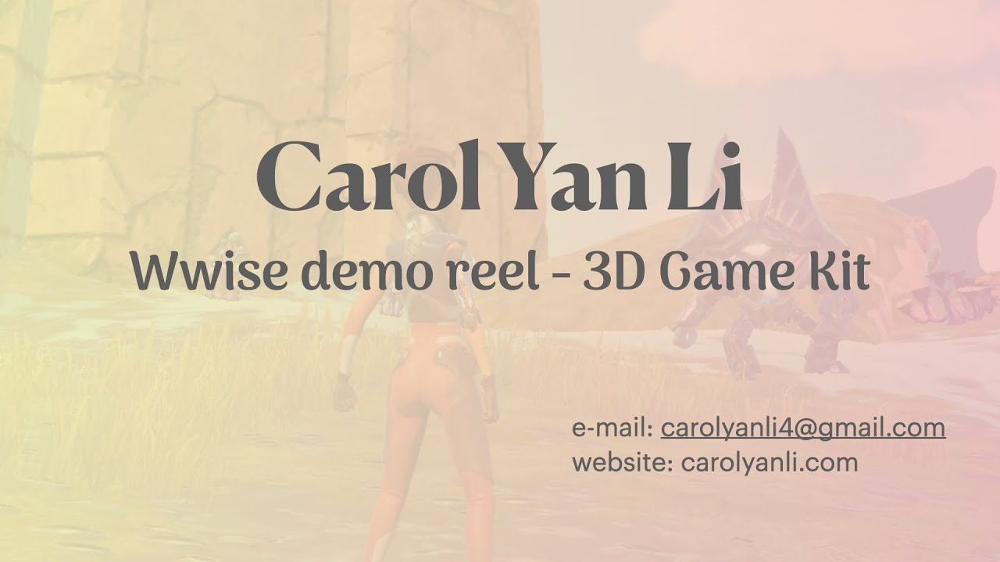

Skip to demos
Rol
Home
首页
Bio
关于我
Demo
演示
Work
作品
Let’s talk ↗
联系合作
Selected
demos.
精选演示
▶
Game Trailer Sound Re-design Demo
游戏预告片声音重设计演示

▶
Wwise Demo Reel
Wwise 演示集
Sound Design & Implementation
声音设计与音频实现
▶
UE5 Demo Reel
UE5 演示集
Sound Design & Implementation
声音设计与音频实现
Film sound / 影视声音 · 新片场 ↗
Production sound / 同期录音 · 新片场 ↗
Watch reel / 播放演示
Close / 关闭 ✕
Loading video… / 正在加载视频…
Retry / 重试 ↻
Open video / 打开视频 ↗
© Carol Yan Li